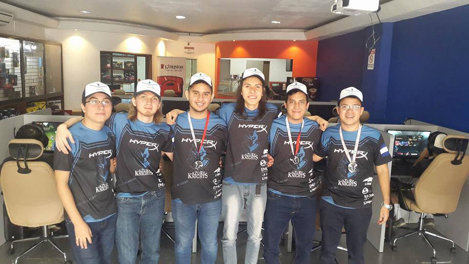

Intereses personales y hobbies
League of
legends es
un
videojuego que tiene 10 años de existir
y siempre ha sido un videojuego al que regreso a jugar siempre, ya que es una manera
en la cual puedo compartir momentos con mis amigos y ademas de eso, logro competir contra
los mejores jugadores de El Salvador y de centroamerica; a continuación muestro una de las fotos
de cuando fuí a Costa Rica junto a mi equipo Azure Knights a un torneo el 2016.

osu! es un videojuego de ritmo
y musica
en el cual he invertido un buen poco de tiempo, el tema principal en este juego es dar clic en los
circulos que salen
en la pantalla en el ritmo de la cancion, y el objetivo es lograr terminar la cancion o "mapa" como
se
le dice. A continuación les presentare un gameplay extraido de mi livestream de twitch.
osu!
gameplay
Path of exile es uno de
mis videojuegos favoritos, un ARPG y MMO que
con su complejo sistema que recompensa a los que planean desde un principio como construiran a su
personaje, me parece muy interesante ya que debes de
trabajar con tantos numeros como por ejemplo la resistencia que necesitará tu personaje en un
determinado momento.